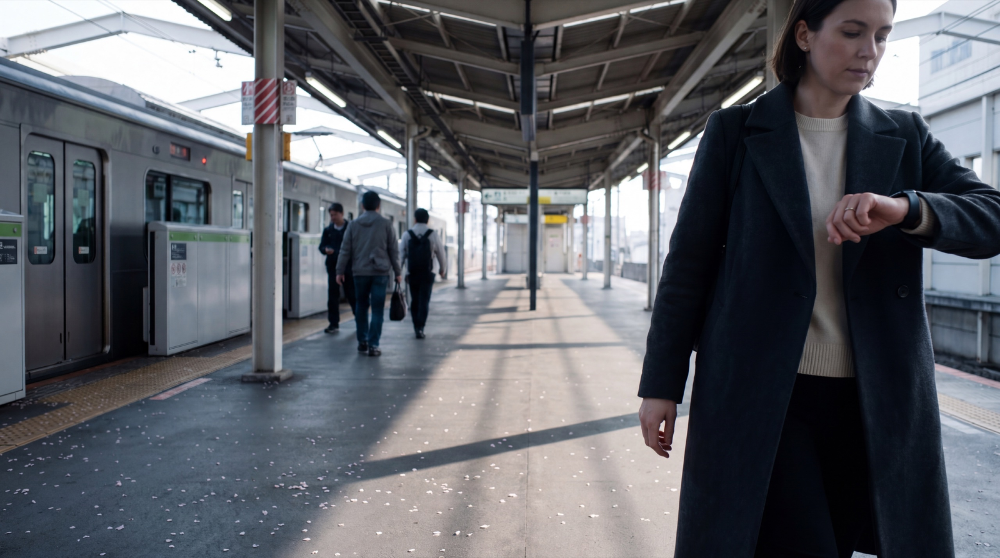
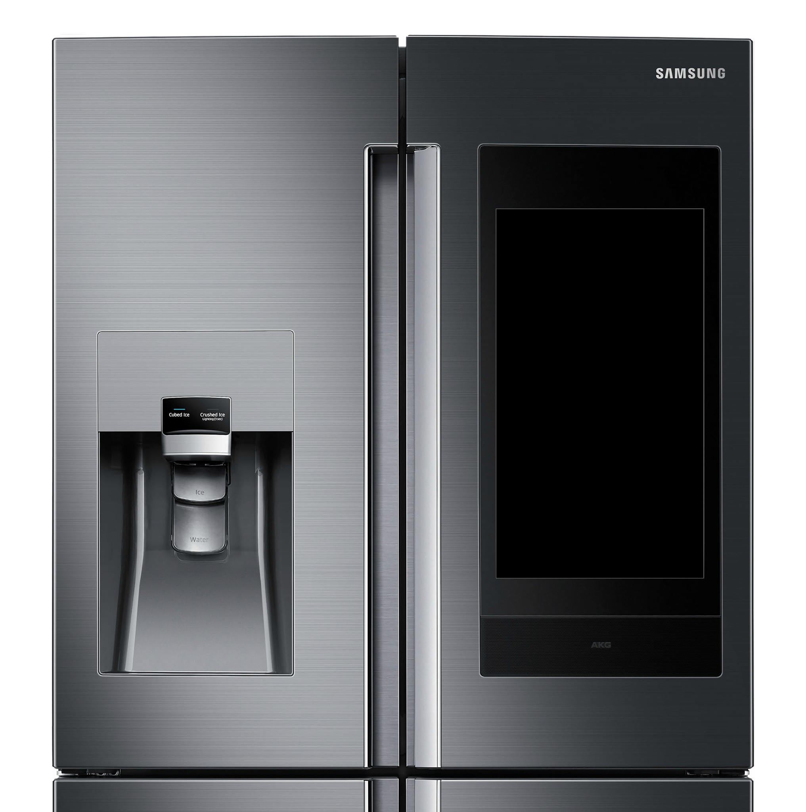

Cross-Surface Grammar — attention,
suppression zones, and Code Blue.
Ines and Mateo's day inside a cross-surface context framework. Unified attention budgets, active suppression zones, and emergency broadcast cascades.
Meet Ines & Mateo
Co-founder of a Copenhagen biotech startup. High email volume, time-critical decisions, frequent travel. Needs work suppression during family hours.
Ines's husband. Works shift cycles in ED. Managed ADHD; highly sensitive to notification noise. Relies on structured glanceable briefings.
Five Surfaces, One Context
How the context grammar expresses itself across the day.
Cross-Surface Grammar routes notifications across 5 surfaces (Watch, Buds, Phone, TV, Kitchen Display) based on three real-time tokens: Cognitive Load, Social Exposure, and Form Factor.
The 3×5 Rules Table
Active rules mapped across three context tokens and five surfaces to resolve final display state.


Cooking Suppression Active
Protecting home focus while cooking.
While cooking Rye Bread in the Copenhagen kitchen, the Samsung Family Hub display transitions to Suppression Active mode. Workspace emails are suppressed and deferred to Ines's phone to protect attention boundaries.
TV Co-Watching Notification Silencing
Shared space, public privacy.
During family movie night, the Smart TV enters Co-Watching Mode. Personal notifications for Ines and Mateo are automatically held back from the shared screen and routed to personal wearables.
Glanceable Watch Morning Briefing
Filtered alerts to align with just-woke Cognitive Load.
Ines wakes up. The watch displays only 3 high-priority notifications. The remaining 20 deferred items are held back until her cognitive load threshold rises later in the morning.
Earbuds Audio Briefing & Waveform
Hands-free text-to-speech summary.
While commuting, Ines receives a 14-second audio summary of Slack messages and weather. The grammar formats text directly to audio, leaving her hands free and phone in pocket.

Emergency Department Code Blue
High-priority broadcast overriding suppression rules.
The same grammar scales to emergency wards. In a Code Blue crisis, the system overrides daily email suppression, broadcasting critical vitals and team states to ward tablets and watch screens instantly.
2030 AR Glasses Peripheral Projection
Gaze-aware notification suppression.
Looking forward to AR glasses. Gaze detection senses active face-to-face eye contact and automatically silences peripheral notifications to protect social moments.
Project Outcomes
The same grammar.
Any surface, any stakes.
A design vocabulary built for the room, not the device.
Ines & Mateo's day in Copenhagen.